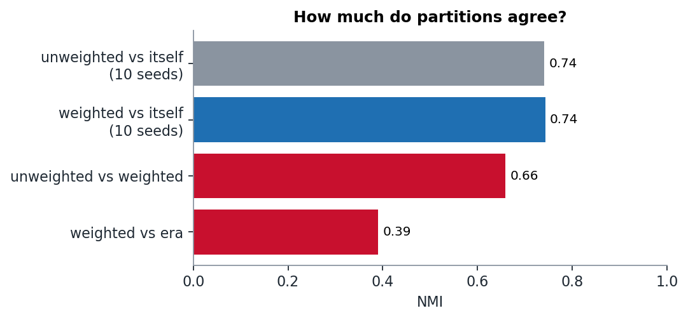

Week 4 · Communities & backbones
Do weights change the history of philosophy?
We ran Louvain on 1,374 philosophers ten times with link weights and ten times without. Weighting changes the partition less than the random seed does, but a handful of philosophers move for good reasons.
The question
The philosophers network has weights: how many times A's article links to B's. Ibn al-Haytham's page might mention Ptolemy seven times, while a passing reference counts once. Does using those weights tell a different story about which philosophers belong together?
Before comparing weighted and unweighted communities, we had to answer a less exciting question: how different are two Louvain runs on the same network? Louvain is randomised. If two seeds already disagree a lot, then a difference between weighted and unweighted means nothing until we know it is larger than that.
Setup
- Giant component: 1,374 philosophers, 9,139 links (both directions summed into one undirected weighted edge, as on the course data page).
- Louvain (NetworkX) with 10 seeds unweighted and 10 seeds weighted.
- Compare partitions with normalised mutual information (NMI).
- Null check: Louvain on a configuration-model shuffle with the same degrees.
Is there community structure at all?
| modularity Q | |
|---|---|
| unweighted (10 seeds) | 0.500 – 0.508 |
| weighted (10 seeds) | 0.546 – 0.564 |
| same degrees, random wiring | 0.228 |
Yes. Q is more than twice what the degrees alone would produce. And the weighted network is more modular: repeated links fall disproportionately inside communities.
Seeds vs. weights

- Two unweighted runs with different seeds agree at NMI = 0.74. Two weighted runs also agree at 0.74.
- Unweighted vs weighted agree at NMI = 0.66.
So switching weights on changes the partition only a little more than changing the random seed does. If we had compared one weighted run against one unweighted run, we would have reported a lot of "philosophers who moved" that were really seed noise.
So who really moves?
To separate real moves from noise, we computed for every pair of the 150 most-linked philosophers how often (out of 10 seeds) they end up in the same community, once unweighted and once weighted. Out of 11,175 pairs, only 54 change that probability by 0.7 or more. The philosophers involved in most of those flips:
| philosopher | unweighted: grouped with | weighted: grouped with | why (from the weighted links) |
|---|---|---|---|
| Kitarō Nishida | Locke, Newton, Rousseau, Voltaire (9/10 seeds) | Kant, Hegel, Nietzsche (0/10 with the Enlightenment) | His strongest links are to his own Kyoto School students Hajime Tanabe and Kiyoshi Miki (4 each), and then to Bergson, Kant and Hermann Cohen. |
| Ptolemy | Aristotle, Plato | Avicenna, Averroes, Maimonides | His heaviest link (weight 7) is to Ibn al-Haytham, who wrote a famous critique of him. Next come Kepler, Hypatia and al-Tusi. Weighted, he joins the history of astronomy. |
| Wilhelm Wundt, Hermann Lotze | Kant, Hegel, Nietzsche | Russell, William James, Peirce | Wundt's heaviest ties are to Helmholtz, Baldwin, Fechner and Herbart: the founders of experimental psychology. Weighted, he sits next to William James. |
| Friedrich Hayek | Leibniz, Locke, Descartes | Russell, James, Peirce | His heaviest links are to 20th-century contemporaries: Ludwig von Mises (12), Keynes (7) and his distant cousin Wittgenstein (5). Unweighted, his many single links to Burke, Mill and Mandeville decide his group instead. |
In each case the weights pull the philosopher away from the famous figures of their era and towards the specific people they were actually in dialogue with. That is the story we hoped weights would tell, but it applies to a handful of philosophers, not to the partition as a whole.
What the communities look like

The communities are partly eras and partly traditions: an Islamic and Jewish medieval group (Avicenna, Averroes, Maimonides), an Indian group (Madhvacharya, the Buddha, Adi Shankara) and a Chinese group (Confucius, Zhu Xi). The Chinese group spans from before Christ to the 19th century, so it is held together by tradition, not by century. The NMI between weighted communities and the era labels is only 0.39: where you philosophised matters as much as when.
Aristotle stays with Plato, Diogenes Laertius, Heraclitus and Cicero in every version. Weights do not move him.
Limitation
NMI against the Wikipedia era lists is a weak validation. Those lists are themselves editorial choices, and "19th century" lumps Hegel together with Peirce. Also, everything here comes from one algorithm. Infomap or a link-community method could cut the same network quite differently.